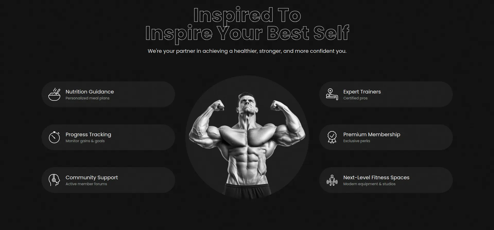
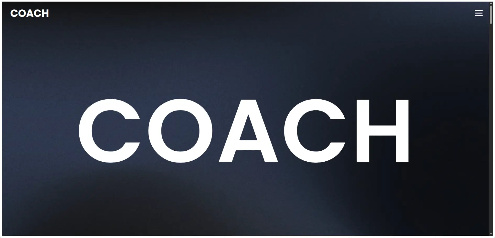

UI Screens


Modern landing page focused on clean design, responsiveness, and conversion-driven layouts.

The goal was to design and build high-quality landing page that communicate clearly, engage users, and guide them toward action.
